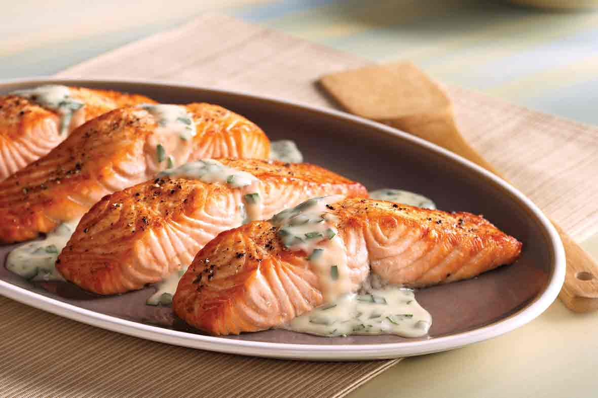
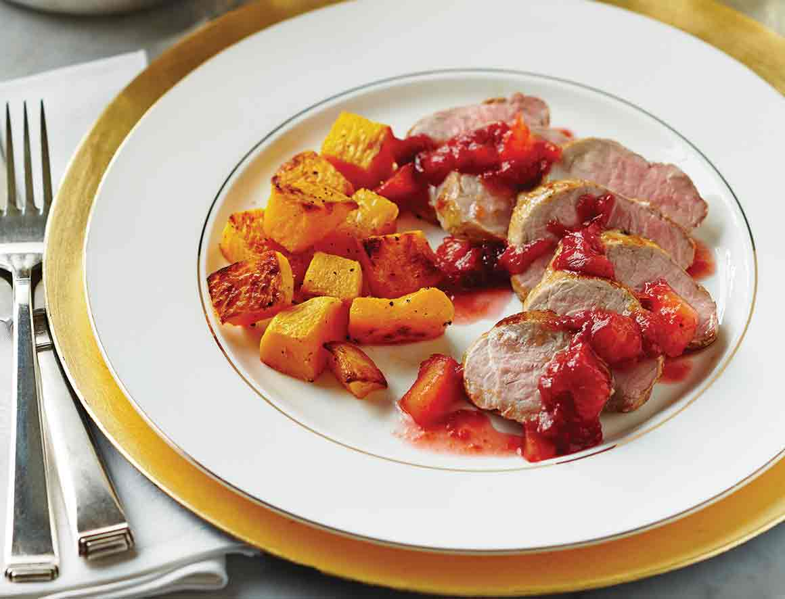
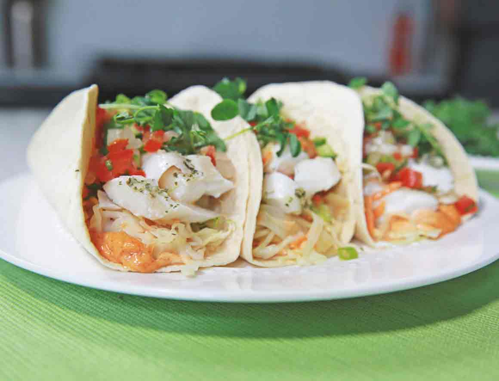

Top 3 Picks
First Place
Salmon with White Wine Butter Sauce
- Preheat oven to 450°F.
- Arrange salmon, skin side down, in a lightly oiled baking pan.
- Brush salmon with olive oil and season to taste with salt and pepper.
- Bake until salmon is no longer translucent but is still moist looking in center (cut to test), about 15 minutes.
- Meanwhile, combine wine and broth in a 10 to 12-inch frying pan.
- Bring to a boil over high heat.
- Boil until reduced to 2-3 tablespoons, about 5 minutes.
- Whisk butter into pan, a few chunks at a time, until sauce is smooth and thickened slightly.
- Stir in tarragon. Remove sauce from heat but keep warm.
- When salmon is done, slide a spatula between skin and meat of each fillet;transfer salmon to individual plates, leaving skin in pan.
- Drizzle salmon with equal amounts of butter sauce and serve immediately
Second Place
Roast Pork Tenderloin with Plum Chutney and Butternut Squash
- Preheat oven to 425°F (220°C). In saucepan, combine plums, brown sugar, vinegar, ginger, star anise, clove and cinnamon stick. Bring to a boil, then reduce to a simmer 30 min., or until thick and syrupy. Discard star anise, clove and cinnamon stick. Set plum chutney aside, keep warm.
- In large bowl, mix butternut squash with 2 tbsp (30 mL) oil, 1 tsp (5 mL) salt and 1/2 tsp (2 mL) pepper to coat. Arrange in single layer on parchment-lined baking sheet. Roast squash 30 to 35 min., turning halfway, until golden brown and tender.
- Meanwhile, season tenderloins with remaining salt and pepper. Heat remaining oil in large non-stick skillet over medium-high heat. Brown tenderloins on all sides, 4 to 6 min. Place on parchment-lined baking sheet. Cook in the preheated oven 15 to 17 min., or until an instant-read thermometer registers 160°F (71°C) when inserted into the thickest portion of the meat. Let stand 10 min. before slicing.
- Served pork with plum chutney and roasted butternut squash on side.
Third Place
Fish Tacos with Pico de Gallo
- In large bowl, whisk together lime juice, aioli, olive oil, salt and pepper. Add coleslaw; toss to coat. In separate bowl, combine cucumber, tomato and green onion. Set aside.
- Cook fish according to Seafood Steamer bag instructions.
- Meanwhile, set aside 2 cups (500 mL) of coleslaw mixture to serve alongside tacos or at another time. Divide remaining coleslaw mixture (⅓-cup/75-mL portions) onto tortilla wraps. Drain and discard juices from Seafood Steamer bags; divide cooked fish on top of coleslaw. Sprinkle on cucumber mixture. Top with cilantro sprigs or microgreens. Garnish with additional aioli, if desired. Fold over tortilla wraps to serve.